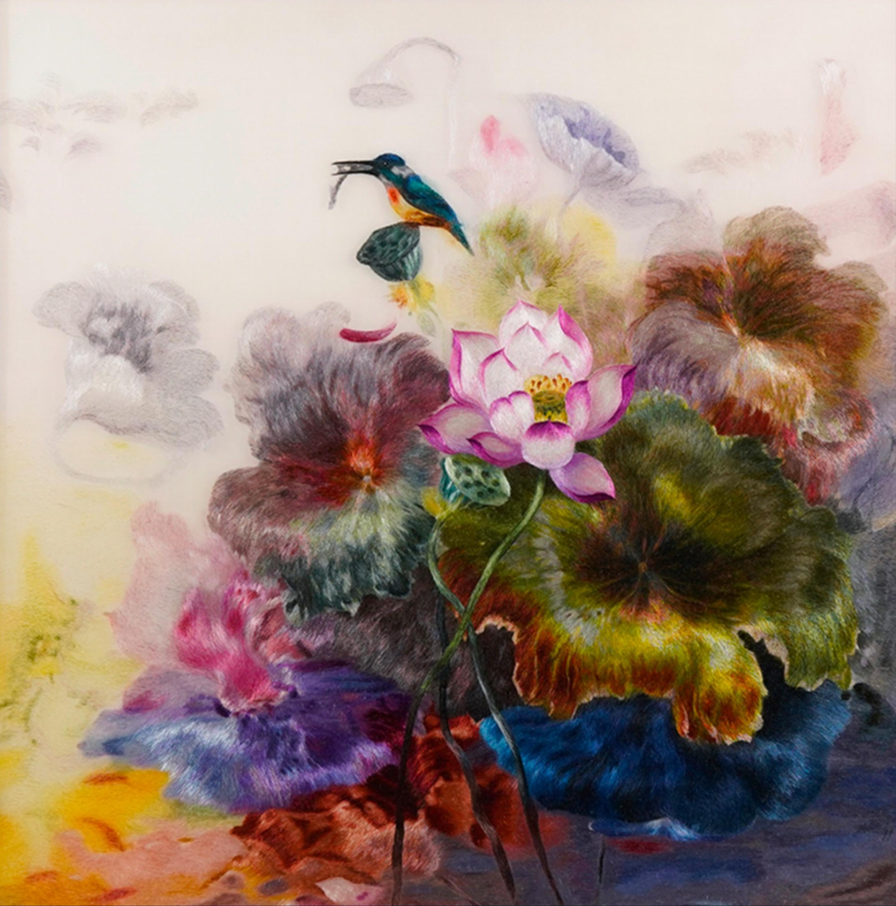
Collectible Art
Flower-and-bird compositions, embroidery inspired by classical paintings, landscape scrolls and folding screens.
Browse selected worksA living tradition
The direction of a stitch changes the way silk catches the light. In Haimen, two generations of the Kelly family keep that knowledge in practice.
Meet the two generationsShop the catalogue
Choose between works to build a collection around and pieces that bring embroidery into the everyday.

Flower-and-bird compositions, embroidery inspired by classical paintings, landscape scrolls and folding screens.
Browse selected worksTabletop displays, gifts and clothing. The catalogue pairs decorative objects with pieces to wear.
Ask about availabilityThe company
Kelly Embroidery makes and exhibits Shen embroidery in Haimen, Nantong. Zhou Zhanxian founded the company in 2003, building on three generations of embroidery practice in the Zhou family. Today, the workshop makes large-scale works for collectors alongside pieces for everyday interiors.
Discover the company museum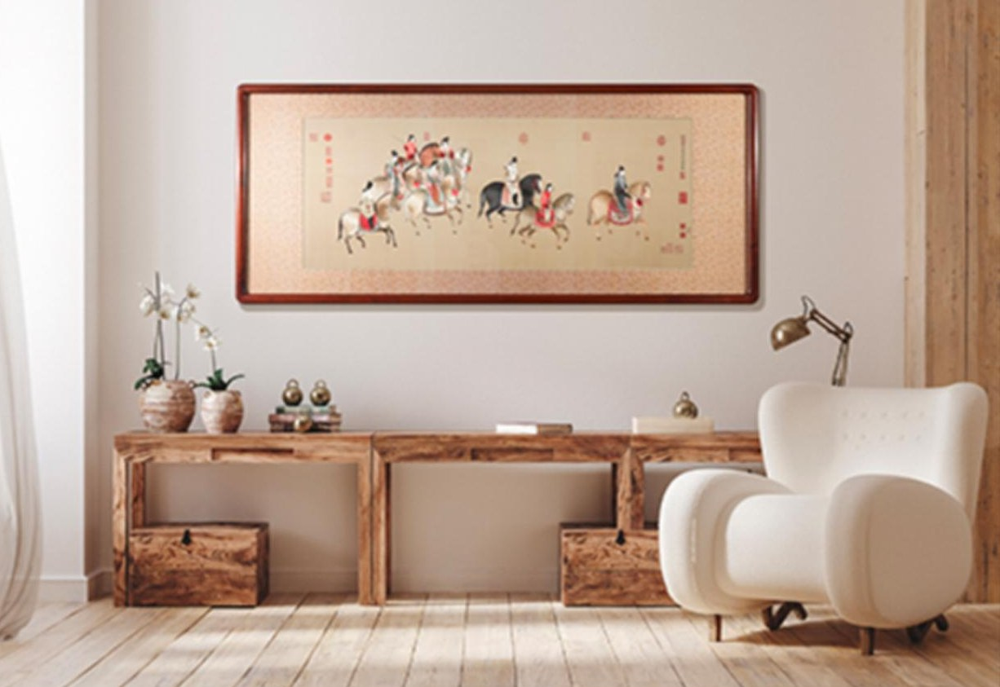
Shen Shou leads the Nantong Women Workers’ Training Institute. A year later, an embroidered portrait of Jesus receives a gold award at the Panama-Pacific International Exposition.
Shen Shou dictates her methods to Zhang Jian. Their work becomes the Xueyi Xiu Pu, the Snow Garment Embroidery Manual.
Fourth-generation inheritor Zhou Zhanxian establishes Kelly Embroidery in Haimen.
The Shen Embroidery Art Inheritance Centre opens in Haimen, with a focus on passing on the practice.
Shen embroidery grew out of Suzhou embroidery. Shen Shou drew on Western painting’s use of light and shade to develop a lifelike style known in Nantong as realistic embroidery. Fine silk stitches follow the contours of a face, a petal or a fold of fabric. Where long and short stitches overlap, one shade can pass into another without an abrupt edge.
The origins of Shen embroidery · 1874–1921
Born Shen Yunzhi in Wu County, Suzhou, in 1874, Shen Shou learned embroidery from her older sister. In 1905 she travelled to Japan to study embroidery. In 1914, at Zhang Jian’s invitation, she took charge of the Women Workers’ Training Institute in Nantong.
Her Portrait of Jesus is one of her best-known embroideries. It won a gold medal at the 1915 Panama-Pacific International Exposition in San Francisco. Look closely at the face: changes in thread direction and colour give depth to the cheeks and shadows around the eyes, effects more often associated with painting.
Shen Shou explained her methods to Zhang Jian, who recorded them in the Xueyi Xiu Pu. The manual preserved practical knowledge of colour, stitch direction and shading for later generations.
Biographical dates and exhibition history are drawn from the museum’s Shen Shou chronology.
The family archive · Before Kelly
The museum records five generations of embroidery practice in the Zhou family. The first three below trace the family’s own history. They are distinct from Shen Shou’s biography and the wider teaching lineage of Shen embroidery.
First family generation
A folk embroiderer born in Haimen, the great-grandmother passed the skill to the next generation. The family panel records a surname only.
Second family generation · 1915–1992
Born in Nantong, Zhai learned from older generations of the family and drew on both Suzhou and Gu embroidery. Zhai ran an embroidery shop in Shanghai and taught the craft to Jiang Lanzhen.
Third family generation · 1937–2000
Born in Shanghai, Jiang moved to Haimen in 1954 to study medicine and organised embroidery work alongside a career in maternity care. By the early 1980s Jiang was running a local embroidery business and teaching Zhou Zhanxian.
In 2003 Zhou established Kelly in Haimen. The next generation, Zhang Tianchi, continues that work. The two are credited together on The “Technique” and “Tao” of Shen Embroidery Art, shown in the museum’s book display.
Meet Zhou Zhanxian and Zhang TianchiSource: the museum’s Zhou family lineage panel and book display.
The artisans
Zhou Zhanxian founded Kelly in 2003. Zhou’s daughter, Zhang Tianchi, continues the family practice through new designs and teaching.
Explore the family archiveFourth-generation inheritor
Zhou founded Kelly in Haimen. Large, technically demanding embroideries have been central to the workshop under Zhou’s leadership, with particular attention to the finish of each piece.
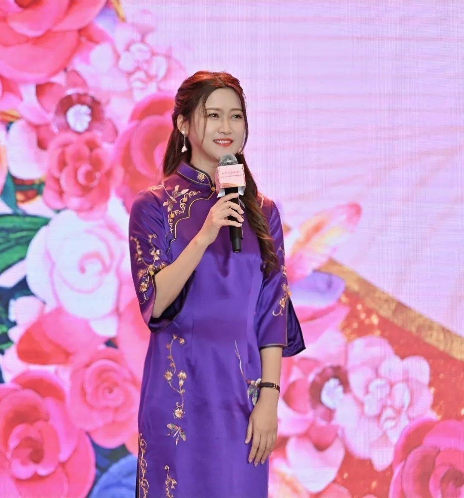
Fifth-generation inheritor
Zhang is the second generation of the family business. Zhang brings a contemporary design perspective to the studio and explores new uses for embroidery and new ways to introduce the craft to audiences abroad.
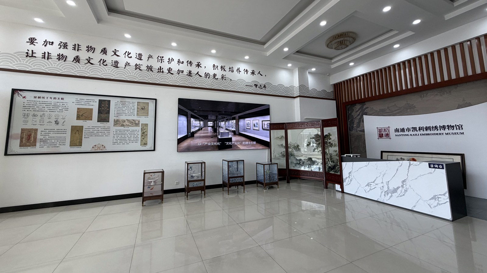
Exhibitions · Haimen, Nantong
The company museum in Haimen brings together embroidered screens, landscapes, narrative scenes and historical material. The displays allow visitors to compare techniques across very different scales, from detailed figures in a long composition to the brush-like strokes of bamboo on a floor screen.
No. 1501 Renmin West RoadInternational exhibitions & exchanges
Selected stops from the studio’s exhibition and exchange record.
Selected Works · Online Gallery
Move along the gallery wall or choose a work below. Open an image for a larger view and notes on what to look for. Catalogue works and museum displays are listed separately.
From the studio catalogue
Six catalogue plates
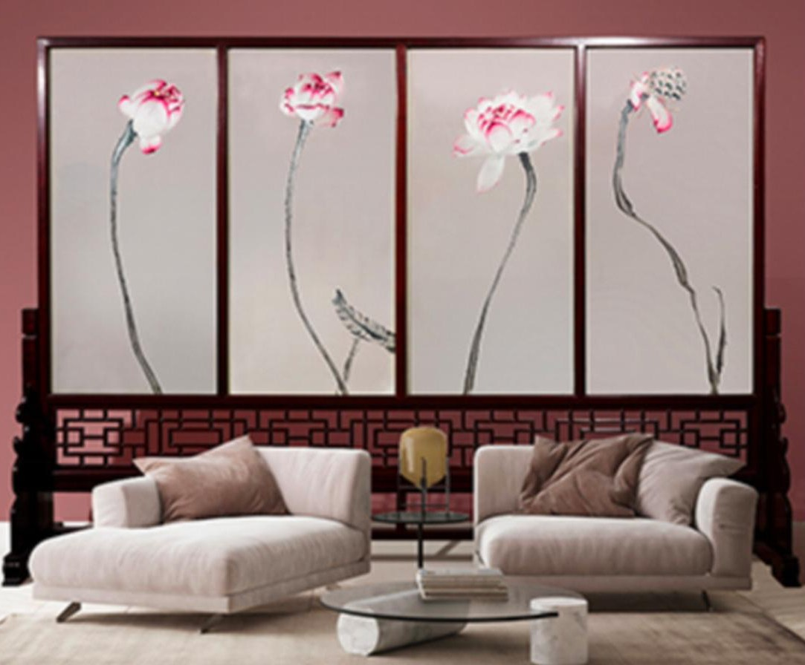
Folding screen · Catalogue plate 11
Flower & bird · Catalogue plate 08
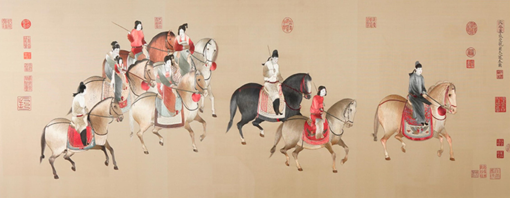
After a classical painting · Catalogue plate 14
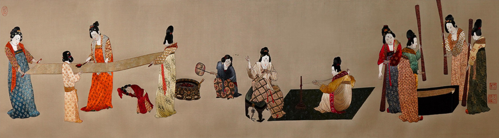
After a classical painting · Catalogue plate 13
Tabletop display · Catalogue plate 17
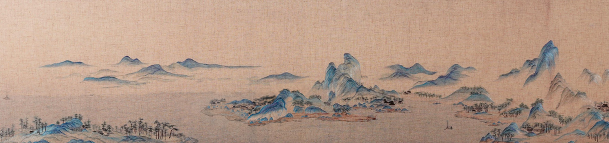
Landscape scroll · Catalogue plate 12
On-site photographs · Museum display, not shop listings
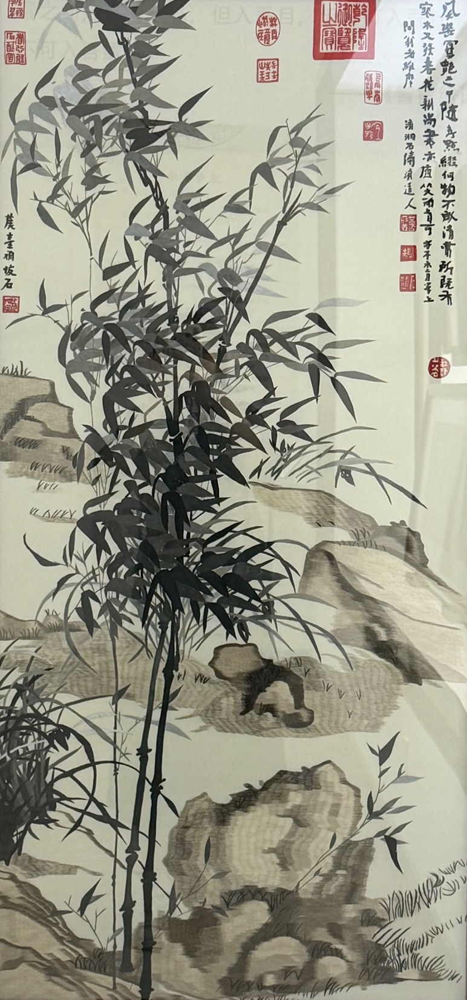
Floor screen · Detail
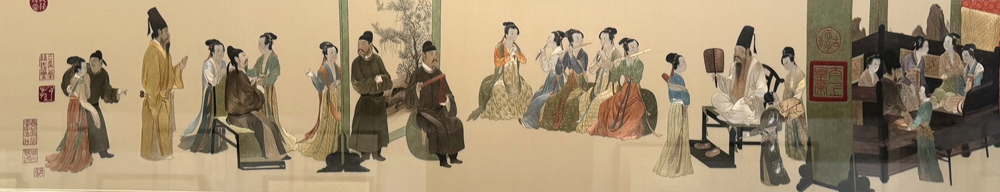
After a classical painting · Detail
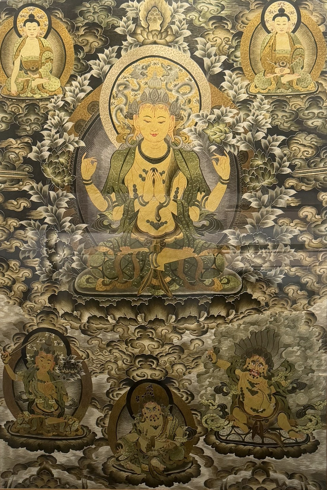
Thangka · Detail
Catalogue photographs are shown separately from cropped museum photographs. Display photographs do not confirm availability, dimensions or framing.
Stories · The studio journal
Technique
Splitting silk into finer strands lets adjacent shades blend without a hard edge.
Look closely at a lotus petal. Shorter stitches in rose and longer ones in cream overlap at the edge. As the angle changes, so does the sheen. Both colour and stitch direction contribute to the way the petal reads.
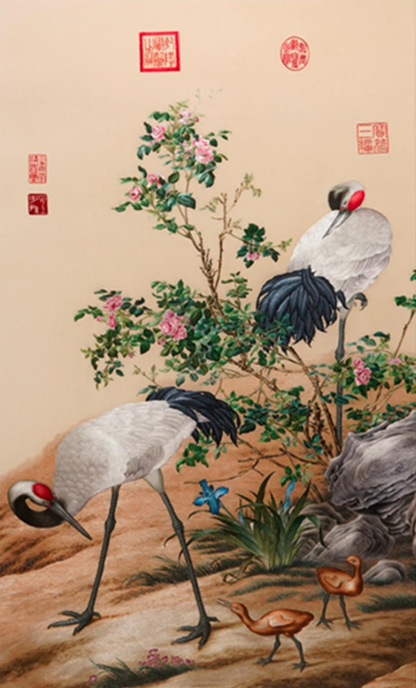
From the studio
A small trial in silk can reveal what a drawing on paper cannot.
Try viewing a sample in natural light and then from across a room. The highlights you see up close can disappear at a distance. A test lets the studio adjust thread colours and stitch direction before committing to the full surface.
Materials & care
Choose a spot with indirect light and stable conditions, away from heat and damp.
Avoid touching the stitched surface, and do not spray cleaning products near it. For stains, loose threads or changes to the mounting, speak to a textile conservator before attempting treatment.
About · Practical information
A piece’s construction depends on its format. Ask for the stitch technique, materials and finishing details of the specific item before buying or commissioning.
Read about Shen embroideryChoose a reference from the gallery or bring an idea to the studio. For an enquiry, note the piece or motif, approximate size, and where it will be displayed. Confirm price, lead time and delivery terms before placing an order.
Find the studioMuseum opening times and admission arrangements should be confirmed locally before travelling.
Look up the address